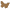

Скриншоты: 1
supplied by Konon
JAD установка
Поддержка BT: есть
Поддержка 3D: есть
Загрузил: Konon
Производитель: Net Lizard
Категория: Java игры
Добавлена: 18 Авг 2009 11:23
Обновлена: 23 Дек 2010 17:44
 Обсудить [2009]
Рейтинг файла(+/-): 2009/18